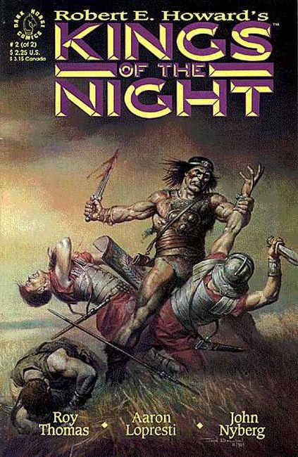

Based on characters created by Robert E. Howard. In ancient Britain, chieftains Bran Mak Morn and Cormac and the tribes of Britain and the North prepare to face the assembled might of Rome. Their only hope of victory lies in finding a king to unite their armies, an impossible task, unless the sorcerer Gonar can conjure one from the Antediluvian past!

A legendary king mystically reborn a thousand years after his death leads Bran Mak Morn and the armies of ancient Britain against the armored might of the Roman legions in the exciting conclusion of this miniseries!